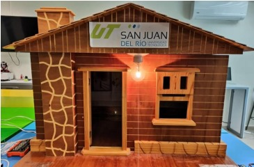

Jesús Angel Acosta Ortíz
"Saludos, me llamo Jesús Angel Acosta Ortíz y actualmente estoy cursando el séptimo cuatrimestre de la carrera de Ingeniería en Desarrollo de Software en la Universidad de San Juan del Río. Con 24 años de edad, tengo un aprecio por la programación y la tecnología que me ha llevado a adquirir conocimientos sólidos en diversos lenguajes de programación, como Python, Java, C++, y C#, además de habilidades en redes. Fuera del mundo de la tecnología, disfruto pasar tiempo en mi motocicleta explorando nuevos lugares y relajarme escuchando música en mi tiempo libre."

Domotic House
"Este proyecto tiene como objetivo simplificar las actividades diarias de las personas que utilicen el prototipo denominado 'Casa Domótica'. En la sociedad actual, buscamos constantemente optimizar el tiempo dedicado a nuestras tareas cotidianas. Por ello, mediante el empleo de la inteligencia artificial (IA) y la automatización de la vivienda, aspiramos a dar un paso hacia el futuro, donde la tecnología nos permita una mayor comodidad y eficiencia en nuestra rutina diaria."
Unidad 1
En esta unidad se busca aprender y aplicar los conceptos básicos de proyectos de TI como: los tipos de proyectos (investigación, innovación, desarrollo tecnológico y emprendimiento), el marco regulatorio en el desarrollo de software y las normas y estándares aplicables a TI aplicables al proyecto de "Domotic House".
Unidad 2
En esta unidad se busca aprender sobre metodologías de investigación y métodos cuantitativos, cualitativos y mixtos, aplicandolos a un proyecto ya echo, tambien se busca como entender las características y pros/contras de enfoques de las diferentes metodologías tradicionales de desarrollo como CMMI, TSP y PSP entendiendolas y aplicandolas al proyecto de "Domotic House".
METODOLOGÍA DE PROYECTOS
"La materia 'Metodologías para el Desarrollo de Proyectos' es un componente esencial en la formación de los futuros ingenieros especializados en Gestión y Desarrollo de Software en la Universidad Tecnológica de San Juan del Río, Querétaro. Este curso brinda a los estudiantes la oportunidad de sumergirse en el ámbito de la gestión de proyectos de desarrollo de software y sistemas inteligentes. Su enfoque se encuentra en el cultivo de habilidades fundamentales necesarias para liderar y supervisar proyectos de manera eficaz, con una atención especial en la seguridad y la inteligencia en el desarrollo de software. A lo largo de la duración del curso, se incorporan una variedad de metodologías y enfoques arquitectónicos, proporcionando así las herramientas necesarias para optimizar proyectos relacionados con investigación, innovación, desarrollo tecnológico y emprendimiento. Este enfoque también promueve el cumplimiento de las regulaciones pertinentes en el campo de la ingeniería de software, preparando a los estudiantes para abordar los desafíos actuales y futuros en el mundo tecnológico con confianza."